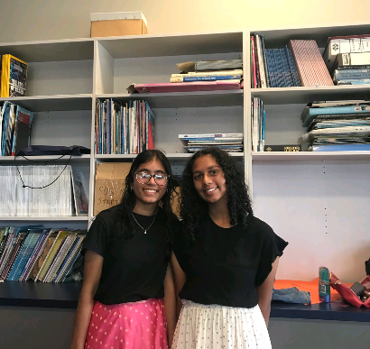

about us
"Hello!! I'm Chantale.
I'm 14 years old and I love to craft! I originally learnt to knit around 2020. One day, I was tired of knitting and decided to try to crochet. To put it simply, it went bad. I messed it up and lost all hope. But, I decided to suck it up and try again.
After that, I started to crochet a lot more, and honestly I'm so glad I didn't drop it completely because Its pretty fun."
-chantale
"Hi! I'm Shantel.
I'm 15 years old and I learned how to crochet when I was around the age of 8, from my mum. I knew all the basics but, all my scarves ended up being tilted. I ended up giving up. Sometimes I would pick the hobby up again and give it another shot- though it was short lived. In the summer of 2021, I picked it up again and crocheted a patchwork cardigan.
Nowadays I use textile arts to express myself and my interests. My favorite things to crochet are plushies, especially with chunky yarn!"
-shantel